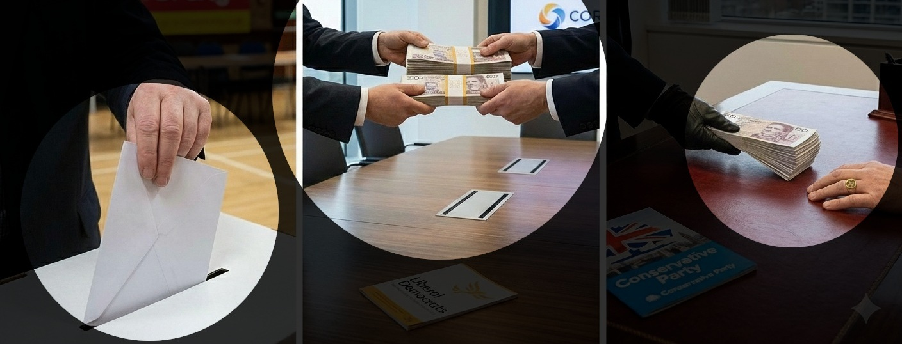

In a true democracy, every vote should matter equally. But in today’s UK politics, it often feels like money speaks louder than voters.
Big donations don’t come from ordinary citizens. They usually come from:
These donors often expect something in return: influence over decisions, access to politicians, or support for their business goals.

When parties rely too heavily on big donors:
Some newer or smaller parties—like Reform UK—attract large donations quickly. With enough money, they can amplify simple promises that sound good but don’t add up. Big cheques let them dominate the conversation, even if the ideas don’t stand scrutiny.
Recent scandals have underscored how money and gifts continue to distort domestic UK politics:
Reform UK received a record £9 million donation from businessman Christopher Harborne, the largest ever political gift from a living donor, raising concerns about outsized influence on party agendas.
At the same time, Prime Minister Keir Starmer has faced criticism for accepting over £100,000 worth of gift and hospitality since 2019.
While analysis shows 319 MPs collectively received more than £1 million in freebies since the 2024 election.
The issue extends beyond Westminster: former Reform UK MEP Nathan Gill was jailed for taking bribes to make pro Russian statements in the European Parliament, and ex UKIP MEP David Coburn has been linked to similar allegations.
Transparency International UK key findings (2001-2024):
In total, 78,735 donations worth £1.19 billion were declared by parties from 2001-2024.
£115 million of suspected donations - 10% of all donations to all parties.
Out of £115 million suspected, 48.2m alleged or proven influence — from donors alleged or proven to have bought privileged access, political influence, or honours.
£42m from individuals alleged or proven to be involved in corruption, fraud, or money laundering (Out of the £115 million suspected).
From the £115 million suspected, £38.6m from unincorporated associations (shadowy clubs and groups) that failed to disclose income sources despite transparency rules.
UK law caps spending only during elections, but donations remain unlimited year-round.
Candidates are limited to ~£20,000 – £30,000 and parties to ~£19m nationally during election campaigns. However in 2024 parties raised £97.7m in donations and spent £94.5m showing how war chests are built between elections to then fuel campaigns and exposing this legal cap as completely cosmetic.
The headlines link to sources of information for the "Capping Political Donations to Protect UK Democracy" section:
Level the playing field between parties, regardless of donor networks.
This reform will not happen unless the public demands it. Parliament will only act if MPs see that voters care about cleaning up political money.
That’s why the next step is simple:
Democracy is not for sale. Let’s prove it.
We call on the UK Government to reform political party funding by:
This would:
Democracy should be about people, not pounds. We urge Parliament to debate and adopt this reform to protect UK democracy from being bought.
Number of people that have signed the petition: 5
Big money dominates UK politics. Parties rely on millionaires, corporations, unions and lobbyists, undermining trust. A £1,000 cap plus £4 civic vouchers - a £4 per year UK funded donation that every voter can direct to the party they support - would level the playing field, end donor dominance, give new and smaller parties a fair chance, and restore trust by ensuring funding comes from voters, not big money. Democracy should be about people, not pounds.